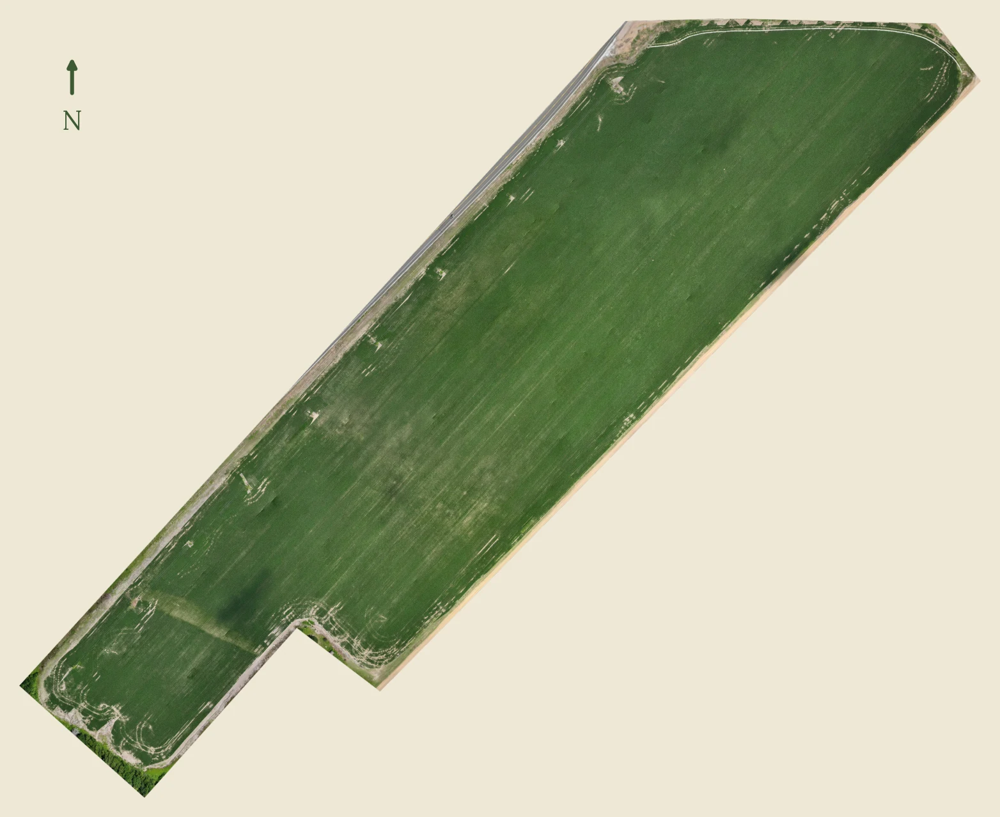

Same field, same flight
True color on the left, relative NDRE on the right. Soybeans, 70 days after planting, flown June 2026 in the Arkansas Delta. This is a healthy field and the images say so. The canopy reads uniform in true color, and the NDRE shows normal variation, nothing worth a walk. When an image does flag something, you get the where. Diagnosis stays with you and your grower.
